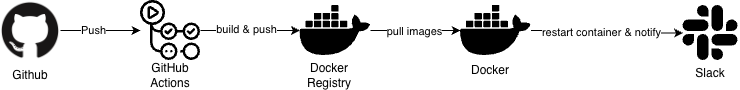
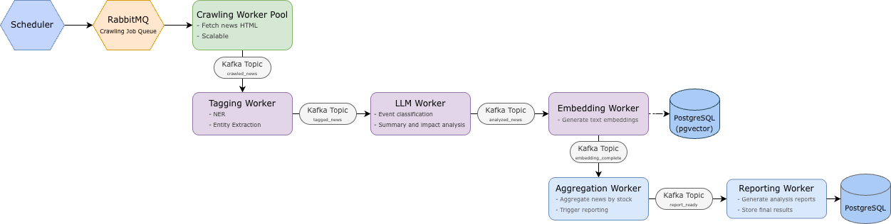
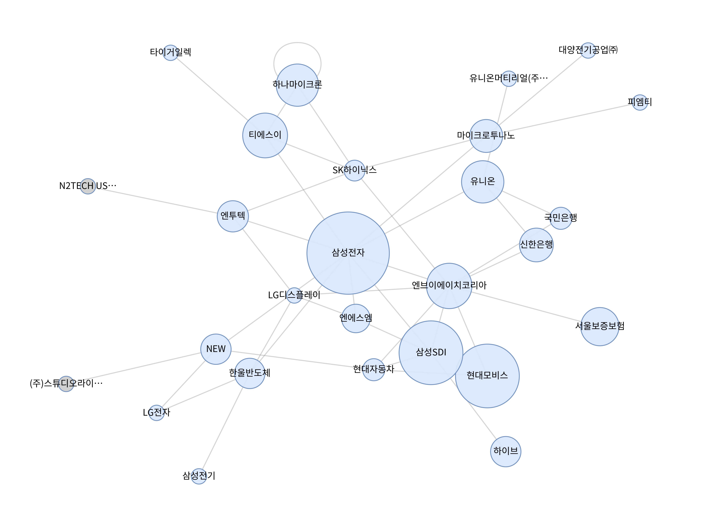
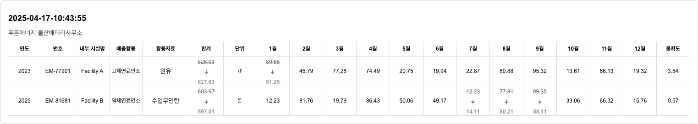

프로젝트
학회 관리 플랫폼 CNU&U
서비스 바로가기 →노션, 구글폼, 디스코드 등에 분산되어 있던 학회 운영 데이터를 통합하고, 모집 · 신청 · 활동 관리를 하나의 서비스로 통합한 학회 관리 웹 서비스입니다.
주요 기능
- 학회원 관리 및 학기별 활동 관리
- 모집 공고 및 신청 관리
- 신청 응답 통계 및 관리
- 회차별 출석 관리 및 수료 확인
기여 내용
- 전체 DB 스키마 설계
- 모집 · 신청 · 활동 관리 API 개발
- 회차별 출석 · 수료 기능 구현
- 실제 학회 운영에 적용 및 운영 중
학회 운영 데이터 통합
노션 · 구글폼 등 여러 플랫폼에 분산된 데이터로 인한 운영 비효율
회원 · 모집 · 신청 · 활동 데이터를 유기적으로 연결하는 통합 DB 스키마 설계 및 전체 워크플로우 구현
수작업 반복 업무 제거로 데이터 정합성 확보, 매 학기 100명 이상 회원 관리에 활용 중
서비스 운영을 위한 배포 자동화
잦은 기능 업데이트와 피드백 반영 과정에서 수동 배포로 인한 리소스 낭비
Docker 기반 실행 환경 통일 + GitHub Actions CI/CD 파이프라인 구축으로 자동화
메인 브랜치 푸시 시 자동 빌드 · 무중단 배포, 개발 사이클 대폭 가속

↑ CI/CD 파이프라인 구성도
하루 5분 주식 리포트 UPssue
GitHub →급등 · 급락 종목의 변동 원인을 뉴스와 데이터로 분석해 근거 중심 AI 리포트를 자동 생성하는 서비스입니다.
주요 기능
- 급등 · 급락 원인 뉴스 근거 기반 자동 분석
- GNN 기반 관련 종목 파급력 예측
- 매일 핵심 경제 이슈 요약 리포트
기여 내용
- 대용량 뉴스 처리 파이프라인 설계 · 구현
- 사업보고서 기반 종목 관계 그래프 구성
- 일별 증시 요약 리포트 생성 자동화
데이터 트래픽 증가로 인한 병목 · 안정성 한계
대량 뉴스 처리 시 순차 파이프라인 구조 병목 + 중간 오류 시 부분 재처리 불가
Kafka · RabbitMQ 메시지 큐 도입으로 크롤링 · 분석 · 임베딩 단계를 독립적으로 분리, 비동기 스트리밍 아키텍처 구축
부하 단계만 선택적 스케일아웃 가능, 오류 단계의 데이터만 재처리 가능해짐

↑ 메시지 큐 기반 비동기 처리 아키텍처
파급력 예측 맥락 부족
거래량 등 단순 정량 지표로는 특정 종목 이슈가 연관 종목으로 전파되는 과정 파악 어려움
사업보고서 기반 기업 간 관계(계열사 · 공급망 등)를 연결한 GNN(그래프 신경망) 모델 구축
종목 변동 파급 원인을 관계 기반으로 제시, 예측 결과의 논리적 설명력 향상

↑ 종목 관계 그래프 예시
ESG 배출 데이터 대시보드
GitHub →ESG 배출량 데이터를 기업 · 사업장 단위로 관리하고, Scope(1/2/3) 기준 배출량 계산과 데이터 수정 이력 추적을 지원하는 ESG 대시보드입니다.
주요 기능
- 기업 · 사업장 단위 배출량 관리 · 조회
- Scope(1/2/3) 배출량 계산 및 시각화
- 대량 데이터 일괄 입력 · 편집
기여 내용
- 기업 · 사업장 · 이력 DB 스키마 설계
- Scope 배출량 계산 로직 및 API 구현
- 대량 데이터 처리 API 개발
- Handsontable 기반 입력 화면 구현
대량 배출 데이터 처리 구조 설계
배출량 수정 내역 추적이 어려워 감사(Audit) 대응 한계 + 변경 시 Scope 계산 정합성 보장 필요
원본 · 계산 결과 · 수정 이력을 완전 분리하는 아키텍처 도입 + 스냅샷 이력 관리 API 및 비동기 재산정 로직 구축
모든 변경 추적 · 복원 가능, 엔터프라이즈급 데이터 신뢰성 확보 + 엑셀 대량 입력 환경에서도 계산 정합성 유지

↑ 수정 이력 조회 화면
.png)
↑ 배출 데이터 처리 흐름